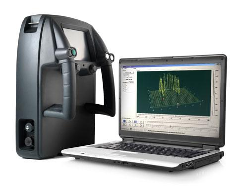
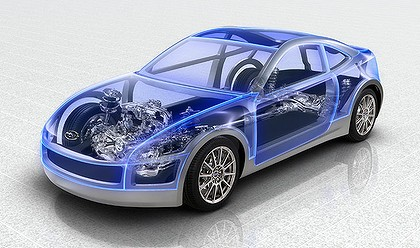
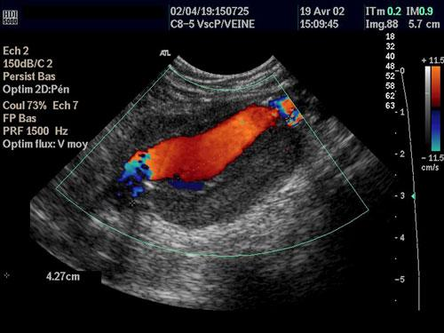
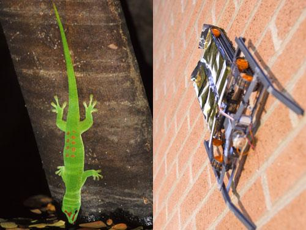
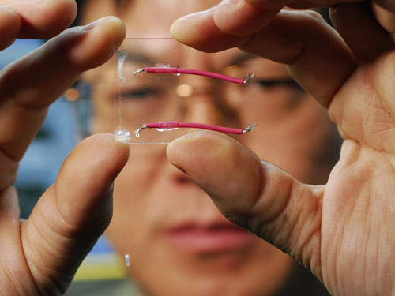
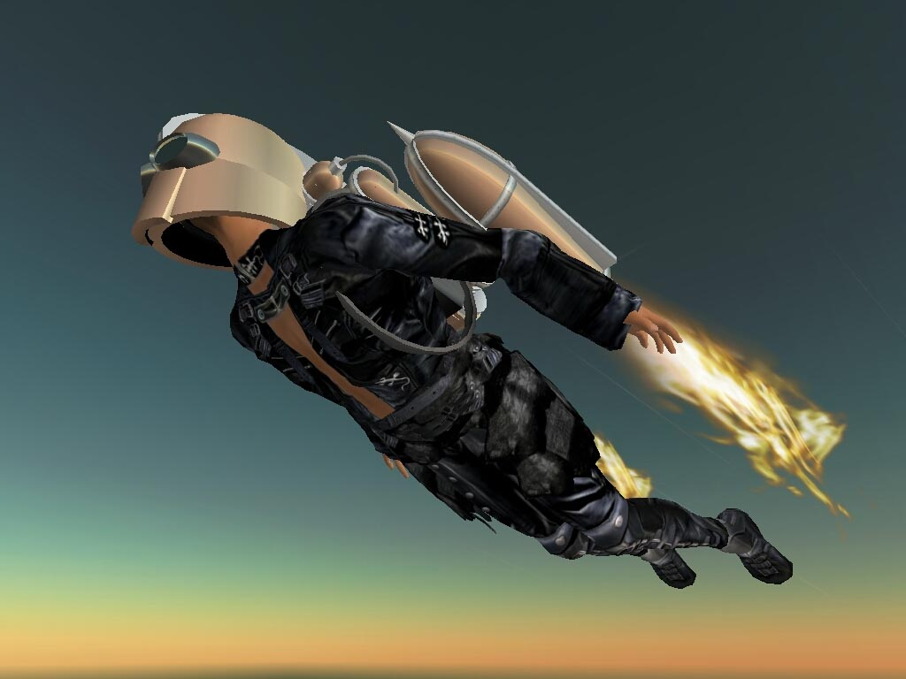
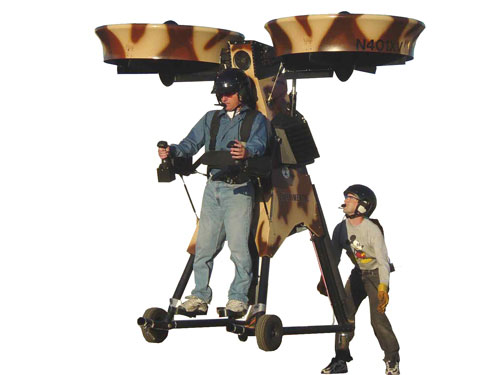
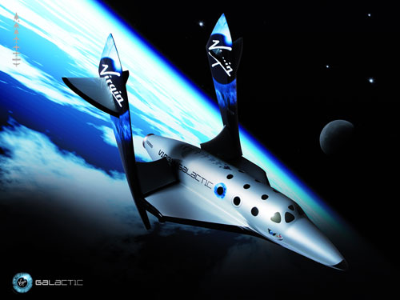
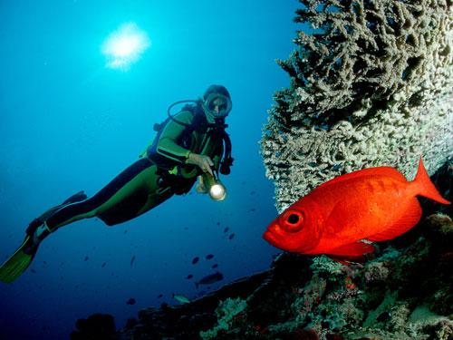

|  | Super-VisionThe briefcase-sized Prism 200, from UK firm Cambridge Consultants, can detect people through brick walls, by firing off pulses of ultra-wideband radar and listening for returning echoes. According to the company, these pulses can pass through building materials over 40 centimetres thick, and spot activity over a range of up to 15 metres. The device could be used to track people in hostage situations, the company suggests, but it has a crucial weakness. To avoid being blinded by walls and other fixed structures, it is designed to only register objects that generate rapidly varying echoes. In other words, it can only detect people when they move. |
|  | InvisibilityTechnology developed at the University of Tokyo makes people or objects transparent, by projecting an appropriately scaled image of the scene behind onto a retroreflective surface. The approach could help drivers by letting them glance through solid parts of a car like the doors or dashboard. |
Invisibility Again...Few dreams have flipped from science fiction to fact as quickly as "invisibility cloaks". The first functional cloak, in 2006, worked only for microwaves. But by 2013 a group at the University of California, Berkeley, constructed a material (pictured) that is able to bend – rather than reflect – visible light backwards. A cloak of the material could steer light around an object to make it truly invisible. |
|
|  | Hands-Free HealingMuch of our medicine still involves inflicting a fair amount of damage to the body – for example from surgery – en route to healing it. But, new forms of ultrasound, already used to look into the body, could change that. Lawrence Crum, at the University of Washington in Seattle, has shown that high-intensity ultrasound can cauterise bleeding arteries. His company, Ultrasound Technology, has developed a hand-held device that allows surgeons to cut through blood-rich organs deep inside the body, and cauterise the cut at the same time, all without breaking any skin. After tests on animals, human trials are scheduled for this year. |
|  | Scaling WallsEngineers chasing the dream of scampering up walls like Spider-Man have turned to geckos for inspiration. This robot (right), built by US research firm SRI International, has feet coated with material with a structure of grippy microscopic hairs, similar to that of the real gecko (left). |
|  | You PowerPortable gadgets have a big Achilles' heel – their batteries. But, progress is being made towards having such devices harness the energy of their owners. This clear material generates current when bent or squeezed, thanks to the zinc-oxide nanowires grown onto it. Medical implants would also benefit from a reduced reliance on batteries. This heart-powered pacemaker is just one example of the potential of tapping the body for power. |
|  | Jet PacksJet packs are nothing new to the world of science any more. Infact, a rocket belt even featured in the James Bond movie, Thunderball, as early as 1965. The limiting factor to the mass scale acceptence of most models, is that none of them is capable of carrying enough fuel to fly for more than around 30 seconds. |
|  | Jet Packs Contd...Alternative designs use ducted fans, like this Springtail from Trek Aerospace, or turbojets instead of rockets. These should be able to stay in the air for longer. |
|  | Space TourismVirgin Galactic's SpaceShipTwo was carried to an altitude of 15 kilometres by a purpose-built launch plane, before detaching and firing its rocket to take its eight-passenger "space tourist" crew to 100 kilometres above Earth, at the edge of space. This will officially be the start of space tourism. Although quite expensive for the general public this early, it will be the first step to unlocking the greater universe to the rest of humanity. |
|  | Breathe UnderwaterScuba divers have long envied fishes' ability to extract oxygen from water. In 2002, a diver spent 30 minutes in a swimming pool doing the same, thanks to an artificial gill built by Fuji Systems of Japan. It used silicon membranes that allowed oxygen, but not water, to pass into the device. Sadly, the amount of oxygen it produces is barely enough to sustain a human. Unfortunately, seawater just doesn't contain a lot of the precious gas we need to survive. In fact, underwater robots, rather than humans, are more likely to be the first users of artificial gills in the oceans. |
Smell-O-VisionSmell-O-Vision began in crude form in the 1950s and has recurred periodically ever since; most recently, in various scenes in select screenings of the film The New World. But preventing scents from mixing into an unintended cocktail, or lingering longer than a scene poses considerable challenges. Japanese firm Sony may have the answer. A recent patent application described the idea of using ultrasound signals to directly stimulate selective parts of the brain, to induce scents in a viewer or game player's mind. Unfortunately, to date, there has been no whiff of Sony producing the hardware required. |